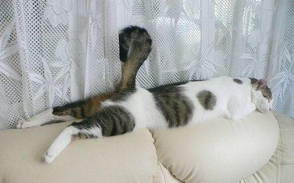
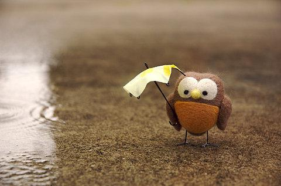
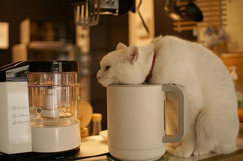
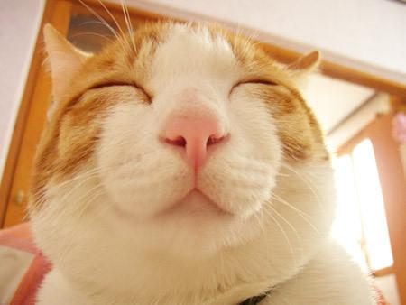

有一个男人第一次看电影，一个镜头是女主角在浴池中躺着沐浴，他看到这个镜头时站了起来，自言自语地说道：难怪楼上的票价比楼下的贵。
老张身体不适去看医生，医生诊断后，只在处方单上画了一个大大的"！"，让他交给护士。老张很不安，心想：我以为是小毛病，怎么医生打了惊叹号，难道我病得很重吗？便请教护士。护士淡淡地答道："没什么，这是打点滴。
夫妻二人骑双人自行车外出郊游。两人吃力而艰难地爬上一个大坡后，丈夫一边喘气一边说道："这，这个坡可真陡，真难爬，累死我了！"妻子附和道："可不是吗，要不是我一直紧捏着刹车，咱们早滑下去了。"
记得那时很久以前了，那个时候春哥刚出了新专辑：WHY ME，然后在一个论坛里看到一个强人的签名：W我 H很 Y爷 M们 E儿...
旅客：空姐MM，把我的行李放上去!乘务员：先生，对不起，我自己一个人抬不动，一起好吗？旅客：你们空姐不是说空中天使吗?!天使还放不上去?!乘务员：先生你顾客是上帝，上帝都放不上去，我天使能放上吗?!
医生叫实习生去药房领一瓶百分之二十浓度的药液，药房没有这种药液。于是，实习生便领了两瓶百分之十浓度的药液回去交差。 医生对他说：年轻人，没有二十岁的大姑娘，难道能找两个十岁的姑娘来凑合吗？
回顶部 上一篇 下一篇 返回首页